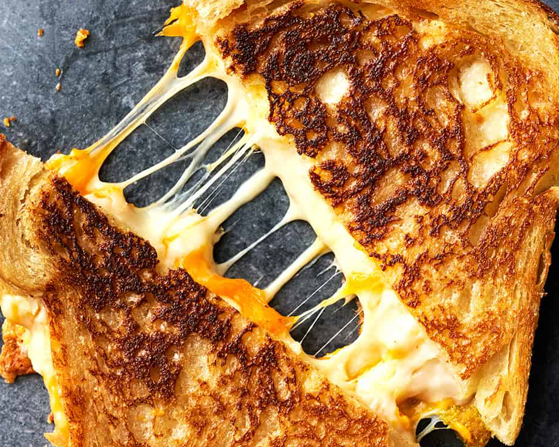

Grilled Cheese Sandwich

A grilled cheese sandwich is a simple and comforting classic that combines the deliciousness of melted cheese between slices of crispy, toasted bread. It's a go-to choice for a quick and satisfying meal.
Ingredients
- 2 slices of bread (e.g., white, whole wheat)
- 2 slices of cheese (e.g., cheddar, American)
- Butter or margarine for spreading
Steps
-
Place a non-stick skillet or a griddle pan over medium-low heat.
-
Butter one side of each slice of bread.
-
Place one slice of bread, buttered side down, onto the heated skillet.
-
Quickly add the cheese slices on top of the bread.
-
Top with the second slice of bread, buttered side up, creating a sandwich.
-
Allow the sandwich to cook for a few minutes until the bottom slice of bread turns golden brown and crispy.
-
Carefully flip the sandwich using a spatula and continue cooking until the second side is also golden brown, and the cheese inside is completely melted.
-
Remove the sandwich from the skillet, cut it in half diagonally, and serve hot.